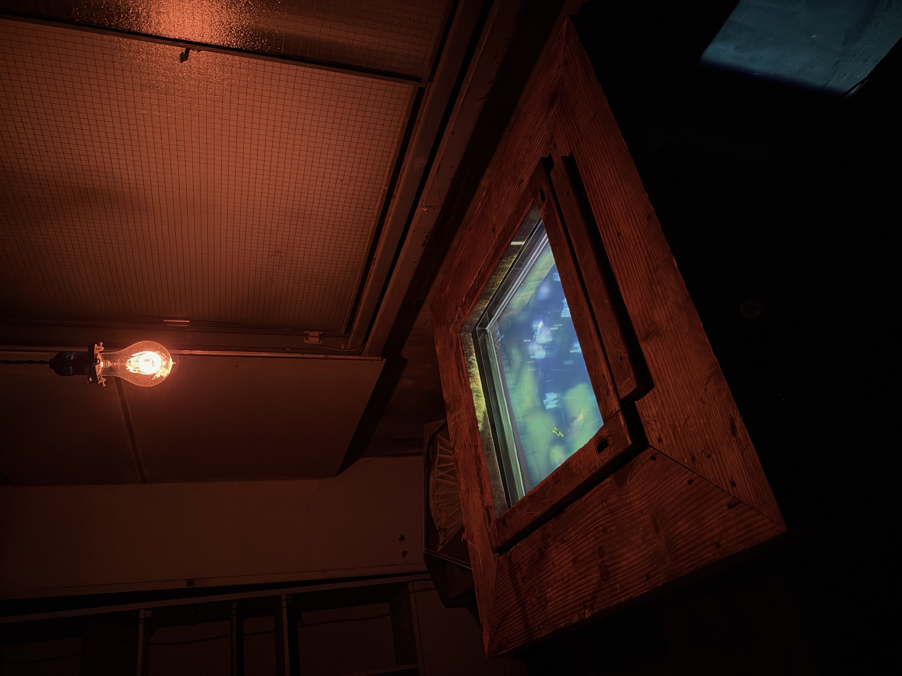
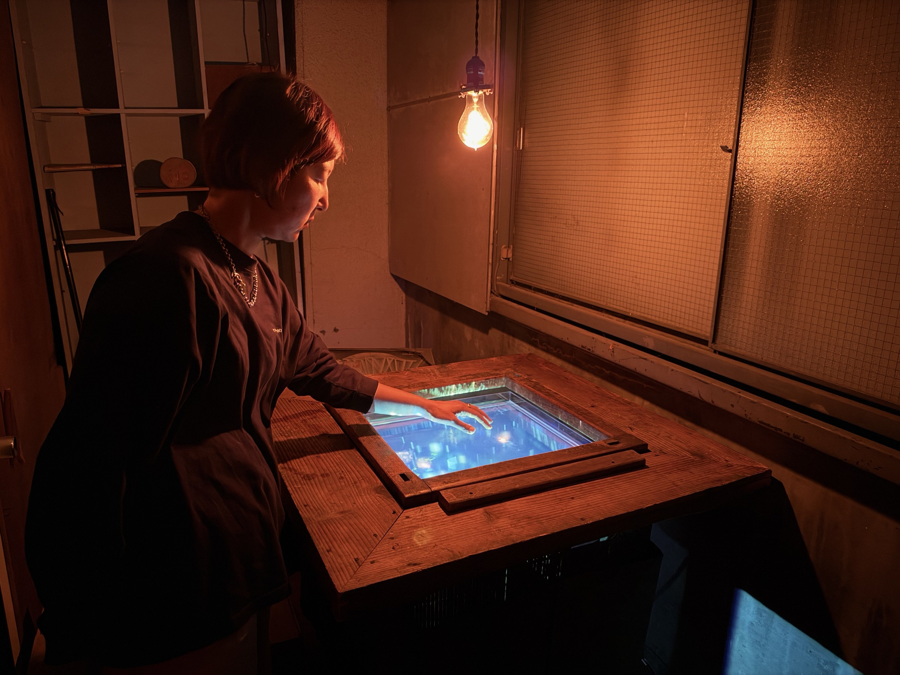
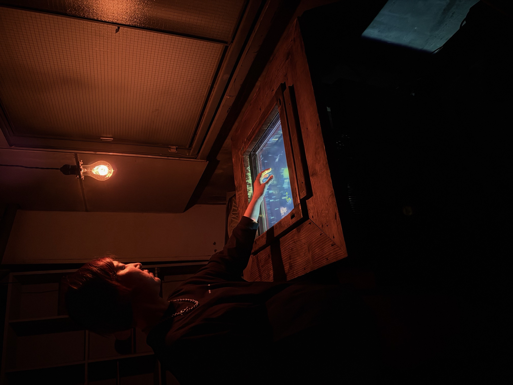
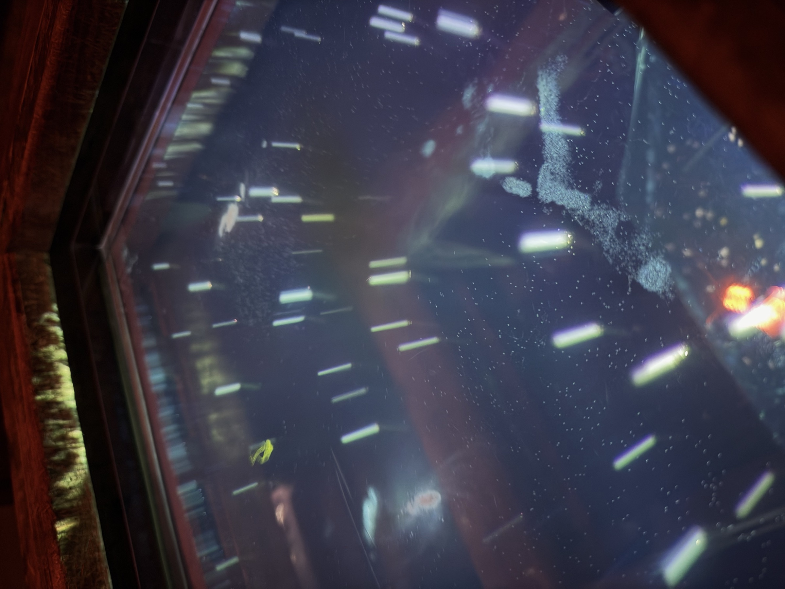
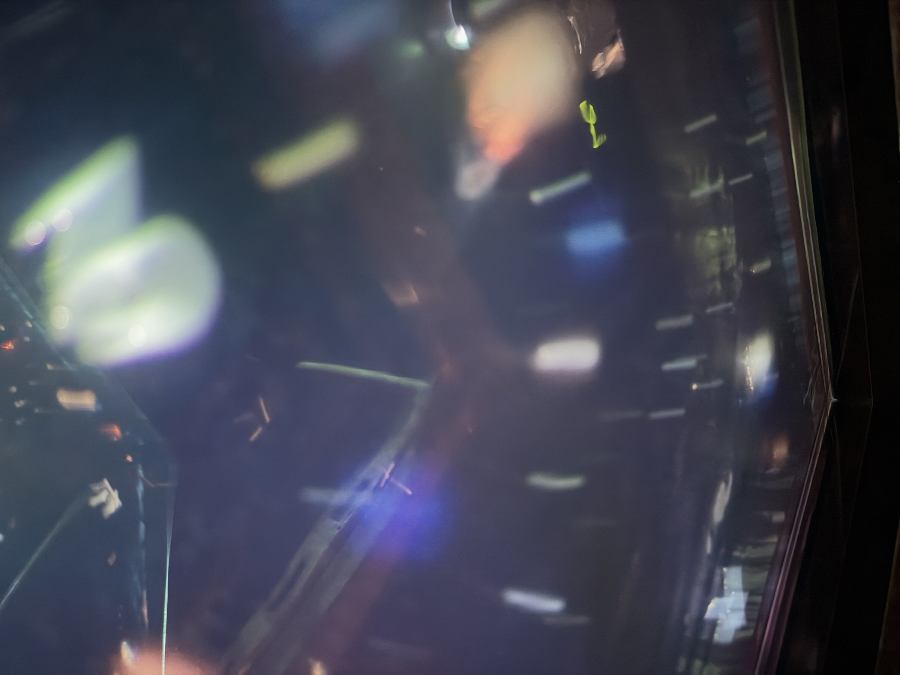
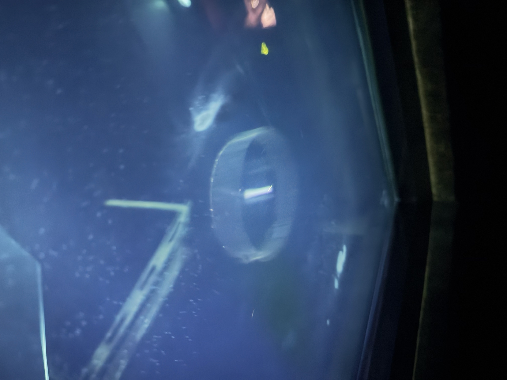
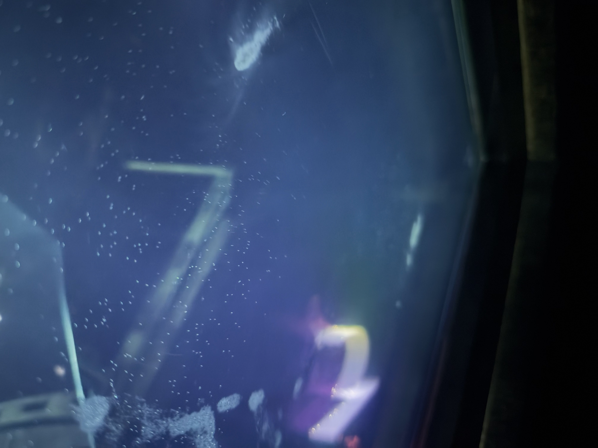
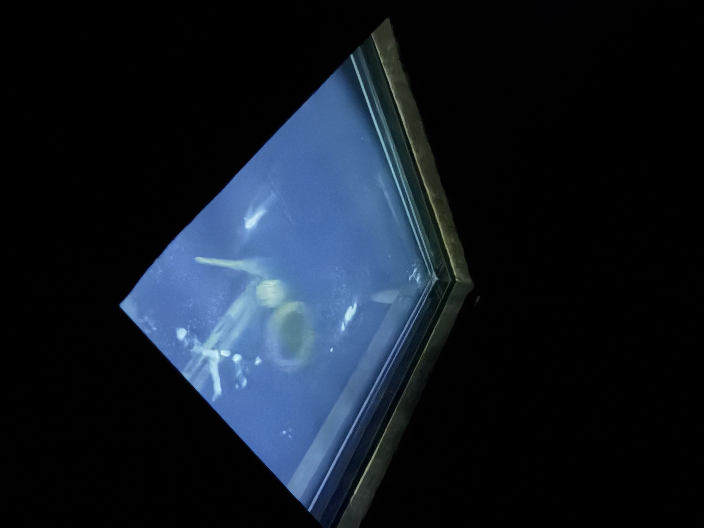

囲炉裏は、火を囲む場所だった。
諏訪の湖のほとりは、水の恵みによって育ってきたまちである。
この作品は、火の代わりに水を囲む。炉に張った水が発光し、水底から言葉が不規則に浮かび上がっては、音と光になって、また水に還る。
受け取ってきた水の恵みと、これから水とどう向き合うのか。ただ囲んで、めいめいの思いを。








Record

iro:re（イロリ）という名には、色（iro）を継ぎ足す（re）＝囲炉裏、という置き換えを最初から埋め込んでいます。岡谷は、諏訪湖の水がただ一筋、天竜川となって流れ出す源流のまちです。
Data
- 作品名
- iro:re（イロリ）
- 制作年
- 2026
- 素材
- ミクストメディア（木、水、映像、音）
映像・音はリアルタイム生成（自作ソフトウェア） - サイズ
- 900 × 900 × H800 mm（囲炉裏台）
アクリル水槽 500 × 500 × H50 mm - 作
- 宮澤 健
- 音楽
- 宮澤 玲
- 展示
- BEN-TEN｜諏訪ノ湖芸術祭2026
カネイチ・プロジェクト「みえないかたち」展
カネイチビル（長野県岡谷市） 2026.9.26 – 10.25